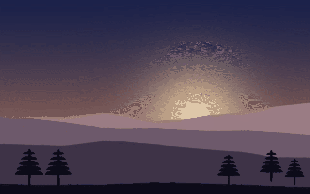
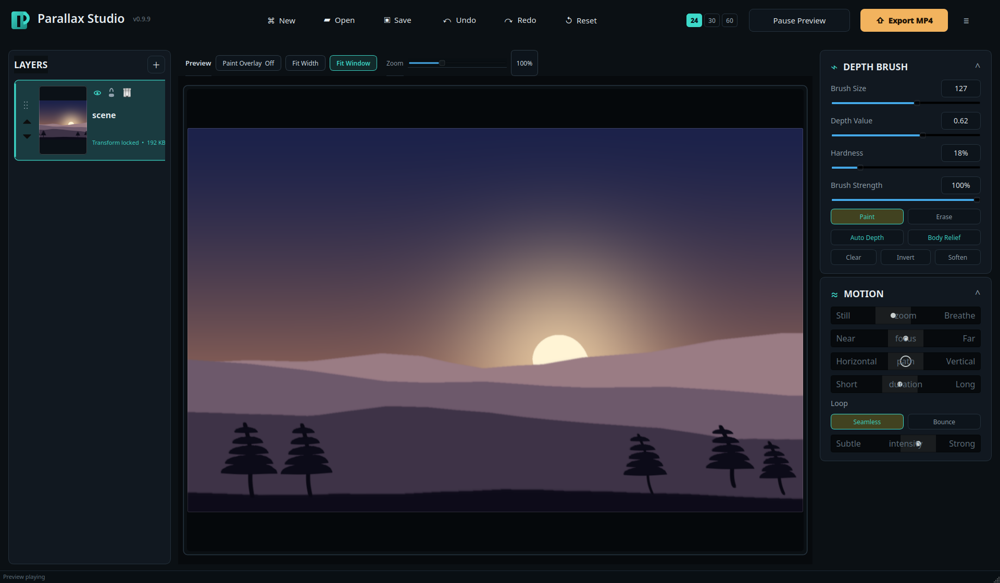
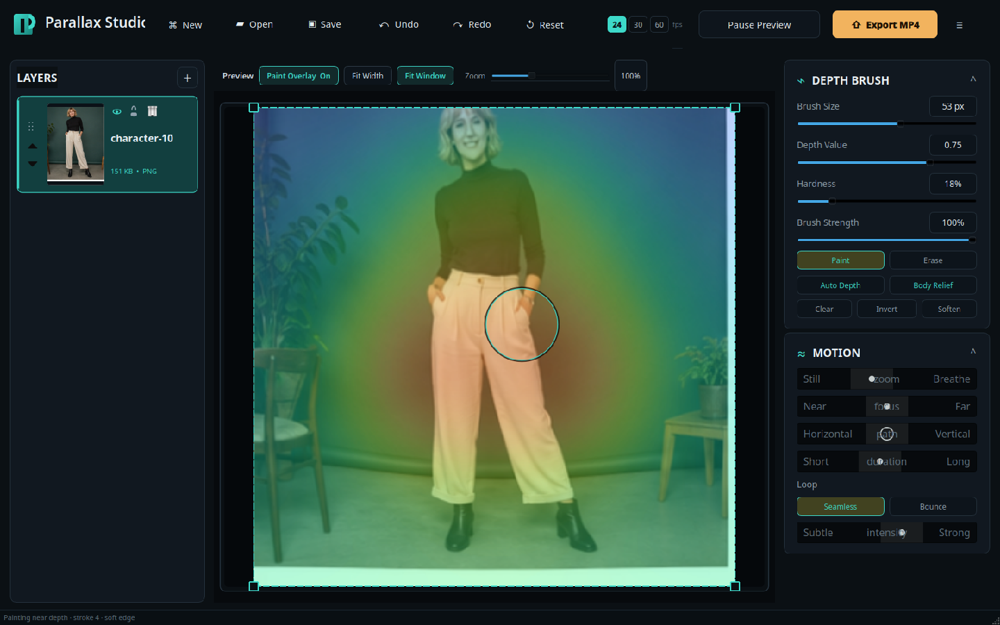

Parallax Studio
Turn a still image into a looping 2.5D parallax animation. Paint depth by hand, or let it generate depth for you. Every model runs on your own machine, with no accounts, API keys or uploads.
- Runs on
- Windows, Linux, macOS
- AI
- Offline, nothing uploaded
- Project file
.parlx


What it does
One focused workflow instead of a giant editing suite.
Auto Depth
Depth Anything V2 separates a subject from its background, then the map is feathered where it would otherwise tear: a hard outline does not stretch under displacement, it folds back over itself.
Portrait, Flaunt and Bounce
For a picture of one person. The face is found and the head moves as one rigid piece, so it never stretches, while the body breathes and turns in depth, swings at the hips, or bounces on the spot. The background stays still, and Erase holds any area you choose.
Depth paint
Or do it yourself. Brush size, hardness, strength and depth value over a colour-ramped overlay that actually shows what you have painted, with undo and redo.

Built for
Artists who want motion from still art without a 3D pipeline.
Visual novel scenes
Layered character art and backgrounds stay editable while you tune depth for subtle motion.
Short loops
Export GIF or MP4 loops for previews, social posts, trailers, or in-game presentation.
Offline by design
The depth, segmentation and pose models download once and then stay on your machine. No cloud service ever sees your pictures.
Stack
Python and Qt, with the models running locally.
UI
PySide6
Image processing
NumPy and OpenCV
AI
ONNX Runtime, Apache-2.0 models
Export
imageio and ffmpeg, optional NVENC
Download
Packages for every platform.
Fetching the latest release from GitHub...
64-bit. The installer is per-user, so it does not ask for administrator rights.
x86_64. RPM for Fedora and RHEL, DEB for Debian and Ubuntu, or a portable tarball.
Apple Silicon, macOS 12 or newer.
Run it with Python 3.11 to 3.13 on any of the three.
The depth and pose models are not bundled. They download on first use, about 75 MB in total, and are kept on your machine afterwards.
More from Long Weekend Labs